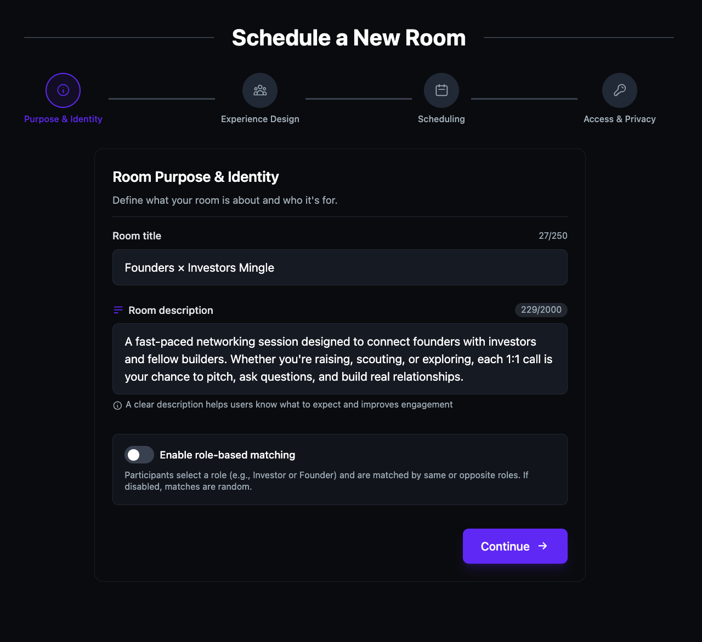
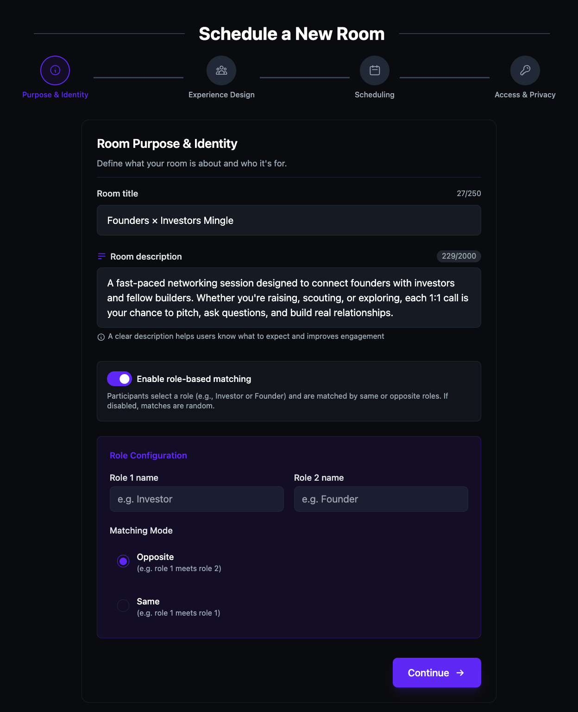
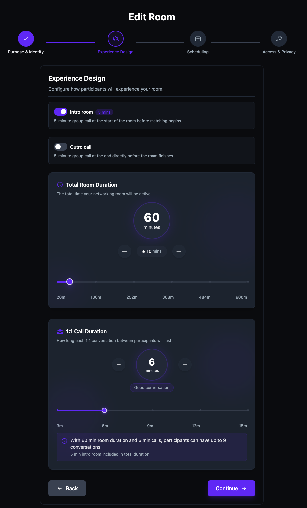
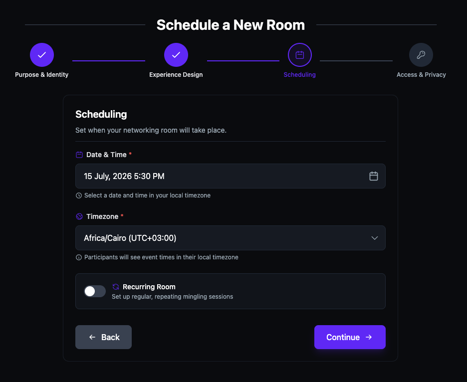
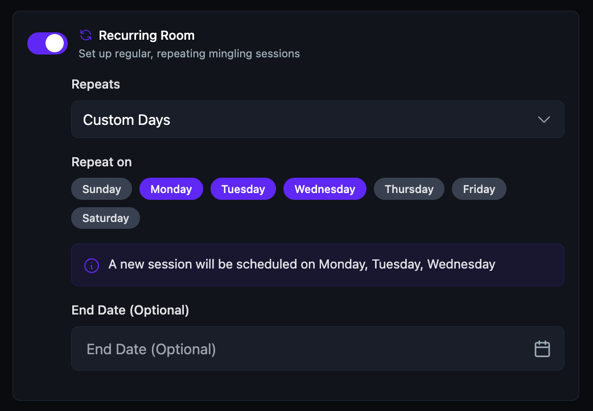
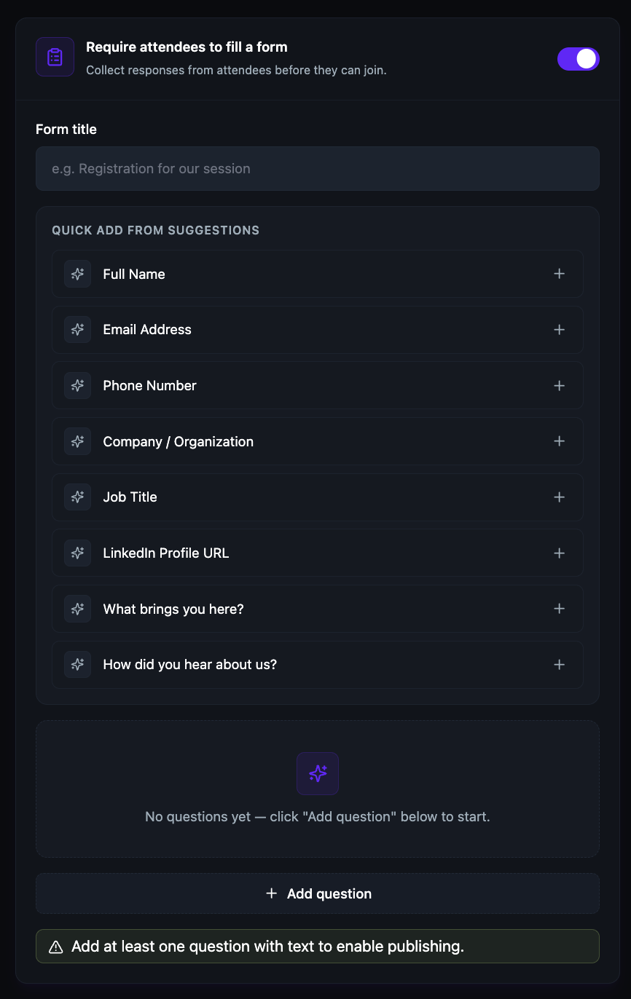

Create a Speed Networking Room
Speed networking rooms automatically match participants into timed 1:1 video calls. Set the room duration, call length, role‑based matching, scheduling, and access controls — the platform handles the rest with no repeats and no manual coordination.
Before you get started
- You must have an Admin or Moderator role to create speed networking rooms.
- If you want to use role‑based matching, this feature requires an upgraded plan.
- Intro room and outro room (group calls before and after matching) also require an upgraded plan.
Set the room purpose and identity
- Click + Create Room in the top navigation bar.
- Select Speed‑Networking Room.

- Under Room Purpose & Identity, enter a Room title.
- Enter a Room description that tells participants what to expect and suggests discussion topics.

Please note: Role‑based matching requires an upgraded plan. If roles are not enabled, the platform defaults to random matching with no repeats.
- To enable role‑based matching, toggle Enable role‑based matching on. Under Role Configuration, enter a Role 1 name and Role 2 name (e.g., Investor and Founder). Select a Matching Mode: Opposite (Role 1 meets Role 2) or Same (Role 1 meets Role 1). If role‑based matching is disabled, matches are random.
- Click Continue →.

Configure the experience design
- Under Experience Design, optionally toggle Intro room on to add a 5‑minute group call at the start of the room before matching begins.
- Optionally toggle Outro call on to add a 5‑minute group call at the end directly before the room finishes.
- Set the Total Room Duration using the slider or the +/- controls. The range is 20 to 60 minutes. Durations above 60 minutes require an upgraded plan.
- Set the 1:1 Call Duration using the slider or the +/- controls. The range is 3 to 15 minutes per call.
- Click Continue →.
Tip: The platform calculates the maximum number of conversations automatically. For example, a 30‑minute room with 5‑minute calls gives participants up to 6 conversations.

Set the schedule
- Under Scheduling, select a Date & Time. The time is set in your local timezone.
- Select your Timezone from the dropdown. Participants see event times converted to their local timezone.
- To set up a repeating event, toggle Recurring Room on. Select a repeat frequency (e.g., Weekly) and optionally set an End Date.
- Click Continue →.

- If you toggle Recurring Room on, select a repeat frequency from the Repeats dropdown and optionally set an End Date. A confirmation message shows the repeat schedule.

-
Select a repeat frequency from the Repeats dropdown:
- Daily — repeats every day.
- Weekly — repeats on the same day each week.
- Bi‑Weekly — repeats every two weeks.
- Monthly — repeats on the same date each month.
- Custom Days — lets you pick specific days of the week.

- If you select Custom Days, use the Repeat on day picker to choose specific days of the week. The confirmation message updates to show which days your room will repeat on.

Configure access and privacy settings
- Under Access & Privacy Settings, optionally add Tags to categorize your room and help people find it.
- Optionally select a Spoken Language for the room.
- Under Access & Visibility Settings, configure:
- Room Privacy — toggle between Approval Required and Auto‑Approve. Auto‑approve lets anyone with the link join without requiring your approval.
- Discoverability — toggle between Unlisted (direct link only) and Discoverable (visible in search and listings).
- Paid Event — toggle between Free and Paid. If paid, set the ticket price.

- To require attendees to fill a registration form before joining, toggle Require attendees to fill a form on.
- Enter a Form title (e.g., "Registration for our session").
- Under Quick Add from Suggestions, click + next to any suggested fields to add them (Full Name, Email Address, Phone Number, Company / Organization, Job Title, LinkedIn Profile URL, What brings you here?, How did you hear about us?).
- To add a custom question, click + Add question and enter your question text.

Please note: You must add at least one question with text to enable publishing.
- Review the Room Summary & Preview at the bottom to confirm your settings (title, date and time, duration, visibility).
- Click Create Room ✓.